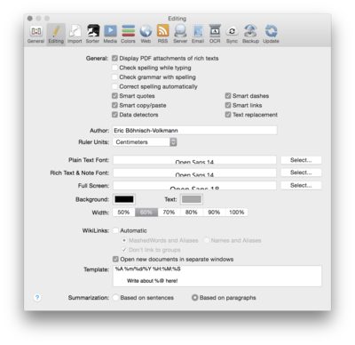

|

The Editing tab defines all options that fine tune DEVONthink Pro Office's text editing behavior, from the ruler units to WikiLink templates to summarization options.
General
-
Display PDF attachments of rich texts: Show the content of PDFs attached to RTF documents.
-
Check spelling while typing: Spell check everything you write all the time.
-
Check grammar with spelling: Check the grammar when checking the spelling.
-
Correct spelling automatically: Correct misspelled words automatically.
-
Smart quotes: Use curly quotes instead of simple English ones.
-
Smart copy/paste: Insert or remove spaces before and after cut or pasted text.
-
Smart links: Detect web addresses and turn them into clickable links automatically.
-
Smart dashes: Convert characters, e.g., two hyphens into a proper dash.
-
Data detectors: Detect dates, times or addresses in text, and show possible actions when the mouse cursor moves over them (Mac OS X 10.6 or later).
-
Text replacement: Use the system-wide text replacements when editing text (Mac OS X 10.6 or later).
Author, Ruler Units and Fonts
-
Author: Enter your name. It will be used as default for metadata, e.g. for new rich text documents or PDF annotations.
-
Ruler Units: Select your personal preference for ruler units such as centimeters or inches, points or picas.
-
Plain/Rich Text Font: Select your preferred fonts for new plain or rich text documents. Note: By their nature, plain text documents are always displayed in the font selected, whereas rich text documents can be styled any way the author wants.
Full Screen
-
Full Screen: Select your preferred font for reading and editing plain text files in full screen mode. By their nature, rich text documents are always displayed using their own styles also in full screen mode.
-
Background: Choose a background color for the full screen mode. This setting only affects the background of plain text files and the border to the left and right of rich text documents. By their nature, rich text documents bring their own background color and so don't use the color you set here.
-
Text: Choose a text color for the full screen mode.
-
Width: Choose a width for displaying documents in full screen mode as a percentage of the screen width. Use this setting if the presentation in full screen mode appears too wide on a large screen.
WikiLinks
-
WikiLinks: Check Automatic if you want to make every word that is also the name of another document or group in the database automatically link to the document of the same name (WikiLink). This mechanism can be restricted to not link to groups, as well as to only accept meshed words. (For example, words with a capital letter in the middle like "QuickTime"; this is the classic WikiLink method to distinguish between regular words and links.) Check Open new documents in separate windows to open a new window when you click a WikiLink, instead of switching to the linked document.
-
Template: Enter a template text here. This will be used to create a new document when you make text a link that does not point to an existing document yet. You can use various placeholders to automatically insert text--the current date and time, for example.
Summarization
Select whether you wish DEVONthink Pro Office to calculate summaries from sentences or from whole paragraphs.
|